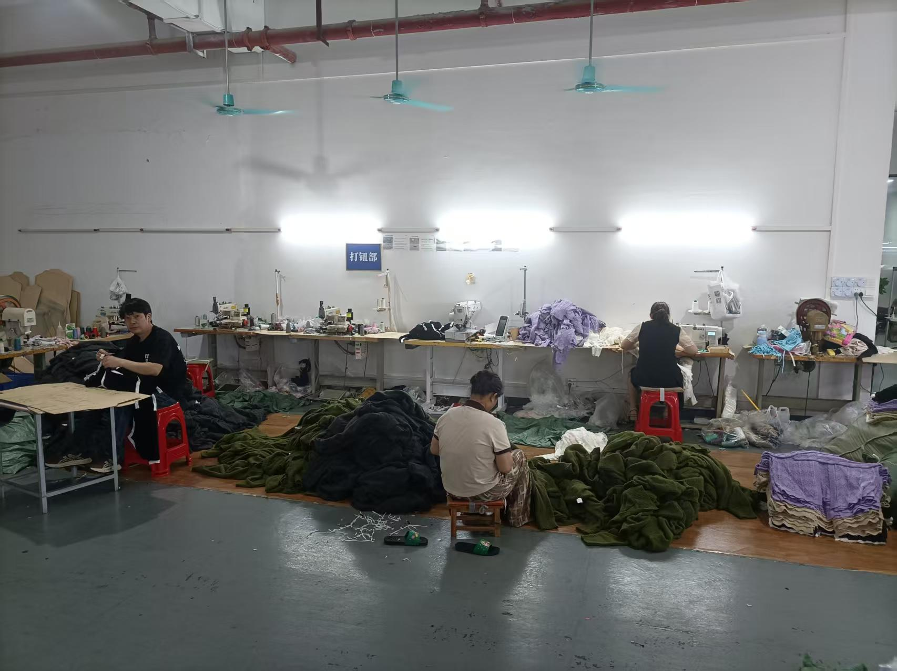

B2B Apparel Case Studies
Apparel Manufacturing Case Studies
Cyncho helps global fashion brands with apparel manufacturing case studies projects from development and sampling to fabric sourcing, bulk production and quality communication.
Get Free Quote
Apparel Manufacturing Case Studies Capabilities
Cyncho case studies show how fashion brands can move from challenge to solution through sampling, sourcing, production planning and quality communication.
Our team can work from tech packs, sketches, samples or reference images. We help clarify construction details, material direction, size range, labels, trims, packaging requirements and delivery planning before moving into bulk apparel production.
Case Study Framework
A strong apparel manufacturing case study should explain the client type, challenge, development process, solution, production result and buyer feedback. This helps future buyers understand how a manufacturer handles real problems.
Cyncho can use case studies to show experience in private label development, OEM dress production, knitwear planning, sourcing challenges and quality communication without exposing confidential client details.
Private Label Collection
Client needed label, trim and sample support before production. Cyncho helped clarify material direction and production steps.
OEM Dress Development
Client provided reference styles and target fabrics. Cyncho supported sampling, fit comments and production feasibility review.
Knitwear Production Planning
Client needed category-specific sourcing and quality discussion before bulk knitwear manufacturing.
Case Study Content Checklist
- Client background without exposing confidential brand information.
- Production challenge such as sourcing, fit, timing or quality control.
- Solution steps including sampling, revisions and production planning.
- Result, buyer feedback and next cooperation opportunity.
How the Process Works
- Share product category, reference images, quantity, size range, fabric direction and target market.
- Cyncho reviews development feasibility, sourcing needs, sampling expectations, MOQ and production timing.
- Samples are developed and revised before bulk production, with fit, measurement, fabric, trims and workmanship checked.
- After sample approval, bulk production is coordinated with clear communication, packaging details and quality control checkpoints.
Best Fit for Buyers
This page is suitable for fashion startups, growing private label brands, importers and established apparel companies comparing clothing manufacturers in China.
Target markets include the United States, United Kingdom, Europe and Australia. Cyncho supports B2B apparel buyers looking for long-term supplier communication and production planning.
Related Cyncho Pages
Compare related services and product pages before sending your inquiry: private label clothing manufacturer, OEM clothing manufacturer, ODM clothing manufacturer, fabric sourcing. Product category examples include women dress manufacturer, women blouse manufacturer, women jacket manufacturer, knitwear manufacturer. For proof of capability, visit factory, quality control and certifications.
Frequently Asked Questions
What should a case study include?
A useful case study includes client type, challenge, solution, production process, result and testimonial or buyer feedback.
Can Cyncho share client names?
Some buyer details may remain confidential, but production challenges and solutions can still demonstrate experience.
How do case studies help SEO?
Case studies improve E-E-A-T by showing practical manufacturing experience and buyer problem-solving.
Request Factory Quote
Send your product details, quantity, fabric needs and target market. Cyncho will help review sampling, sourcing and production options.
Contact Manufacturer